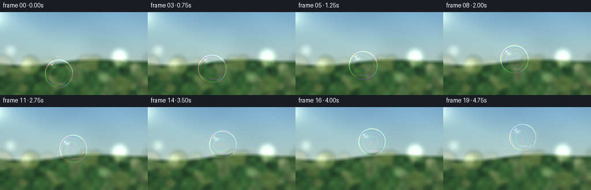
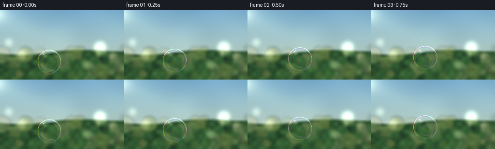

CODING AGENTS AS PIXEL WORLD MODELS
traex/GPT-5.6-Sol · phygen_082
点击播放 · 原生 RGB 像素
逐轮保存的候选
回放视频、检查图与代码变化。
每份候选均可单独播放。实际图片检查记录在下方工具轨迹中。
候选 01播放与检查图
点击播放 · 原生 RGB 像素


展开代码变化
--- 上一保存版本 +++ 本次保存版本 @@ -0,0 +1,235 @@ +"""Procedurally render a sunlit soap bubble drifting through garden air. + +The renderer is deliberately self-contained: all scenery, optical distortion, +thin-film colour, and motion are generated from mathematical primitives. +""" + +from pathlib import Path +import json + +import cv2 +import numpy as np + +import artifact_io + + +ROOT = Path(__file__).resolve().parent +SPEC = json.loads((ROOT / "task_spec.json").read_text()) +W, H = SPEC["width"], SPEC["height"] +N = SPEC["frames"] +S = 4 # supersampling keeps the bubble rim delicate +WW, HH = W * S, H * S +RNG = np.random.default_rng(82011) + + +def smooth_noise(height, width, cell, seed): + """Soft natural variation, without any external textures.""" + rng = np.random.default_rng(seed) + gh, gw = max(2, height // cell + 2), max(2, width // cell + 2) + small = rng.normal(0.0, 1.0, (gh, gw)).astype(np.float32) + return cv2.resize(small, (width, height), interpolation=cv2.INTER_CUBIC) + + +def make_background(): + y, x = np.mgrid[0:HH, 0:WW].astype(np.float32) + yn, xn = y / HH, x / WW + + # A luminous, defocused late-afternoon sky. + top = np.array([126, 180, 214], np.float32) + low = np.array([211, 220, 185], np.float32) + bg = top[None, None, :] * (1 - yn[..., None]) + low[None, None, :] * yn[..., None] + cloud = (0.58 * smooth_noise(HH, WW, 180, 14) + + 0.28 * smooth_noise(HH, WW, 75, 31) + + 0.14 * smooth_noise(HH, WW, 34, 63)) + cloud = cv2.GaussianBlur(cloud, (0, 0), 18 * S) + bg += cloud[..., None] * np.array([7.0, 8.5, 8.0], np.float32) + + # Warm sun just beyond the upper-left corner and broad atmospheric rays. + sun_d = np.sqrt(((x + 11*S) / (89*S))**2 + ((y - 7*S) / (70*S))**2) + halo = np.exp(-sun_d * 2.2) + core = np.exp(-sun_d**2 * 16.0) + bg += halo[..., None] * np.array([49, 41, 23], np.float32) + bg += core[..., None] * np.array([58, 50, 35], np.float32) + ray = np.exp(-((y - (0.47*x + 10*S)) / (20*S))**2) * np.exp(-xn*1.7) + bg += ray[..., None] * np.array([10, 9, 5], np.float32) + + # Distant hedge. It is assembled at high resolution, then heavily blurred + # so the bubble remains the unmistakable focal subject. + hedge = np.zeros_like(bg) + hedge[:] = np.array([48, 88, 50], np.float32) + hedge += (10 * smooth_noise(HH, WW, 36, 92))[..., None] * np.array([.6, 1., .45]) + horizon = (0.60 + 0.018*np.sin(x/(31*S)) + 0.025*np.sin(x/(67*S)+1.2)) * HH + mask = np.clip((y - horizon) / (0.045*HH) + 0.5, 0, 1)[..., None] + bg = bg*(1-mask) + hedge*mask + + # Large circular foliage/sun bokeh, all deliberately out of focus. + bokeh = np.zeros((HH, WW, 4), np.float32) + colors = [ + (45, 103, 53), (71, 119, 57), (102, 137, 66), (155, 164, 83), + (223, 209, 135), (43, 82, 45), (187, 184, 102), (234, 222, 160) + ] + for _ in range(82): + cx = int(RNG.uniform(-20, W+20)*S) + cy = int(RNG.uniform(83, H+17)*S) + rr = int(RNG.uniform(4.5, 18)*S) + col = colors[int(RNG.integers(len(colors)))] + alpha = float(RNG.uniform(.10, .42)) + cv2.circle(bokeh, (cx, cy), rr, (*col, alpha), -1, cv2.LINE_AA) + bokeh = cv2.GaussianBlur(bokeh, (0, 0), 3.1*S) + a = np.clip(bokeh[..., 3:4], 0, .72) + bg = bg*(1-a) + bokeh[..., :3]*a + + # A few pale bokeh highlights in the brighter middle distance. + glow = np.zeros_like(bg) + for cx, cy, rr, strength in [(207, 78, 13, .36), (231, 95, 7, .24), + (44, 93, 11, .25), (180, 113, 9, .20), + (18, 67, 8, .20)]: + cv2.circle(glow, (cx*S, cy*S), rr*S, (255*strength, 248*strength, 200*strength), -1) + glow = cv2.GaussianBlur(glow, (0, 0), 4*S) + bg += glow + + # Cinematic vignette and a small amount of sensor-like fine grain. + vignette = np.clip(1.0 - .16*((xn-.48)**2 + (yn-.46)**2), .82, 1.0) + bg *= vignette[..., None] + grain = RNG.normal(0, 0.75, (HH, WW, 1)).astype(np.float32) + return np.clip(bg + grain, 0, 255) + + +BASE = make_background() + + +def drifting_air(frame, base): + """Subtle floating pollen makes the empty air feel dimensional.""" + out = base.copy() + layer = np.zeros_like(out) + # fixed particles, each with its own slow upward/sideways drift + prng = np.random.default_rng(444) + for i in range(22): + x0 = prng.uniform(0, W) + y0 = prng.uniform(3, H) + speed = prng.uniform(.12, .5) + px = (x0 + speed*frame + 1.1*np.sin(frame*.16+i)) % W + py = (y0 - speed*.32*frame) % H + rad = prng.uniform(.20, .62)*S + val = prng.uniform(25, 72) + cv2.circle(layer, (int(px*S), int(py*S)), max(1, int(rad)), + (val, val*.96, val*.75), -1, cv2.LINE_AA) + layer = cv2.GaussianBlur(layer, (0, 0), 0.42*S) + return np.clip(out + layer, 0, 255) + + +def render_bubble(canvas, frame): + t = frame / (N - 1) + # A buoyant rising trajectory: mostly upward, with a gentle air-current + # meander and a tiny acceleration near the end. + cx = 101.0 + 42.0*t + 5.2*np.sin(2*np.pi*(.72*t + .03)) + cy = 105.0 - 51.5*t - 3.0*t*t + 1.8*np.sin(2*np.pi*(1.05*t + .15)) + radius = 23.7 + .85*np.sin(2*np.pi*(.58*t + .1)) + cxh, cyh, rh = cx*S, cy*S, radius*S + + pad = int(5*S) + x0 = max(0, int(cxh-rh-pad)); x1 = min(WW, int(cxh+rh+pad+1)) + y0 = max(0, int(cyh-rh-pad)); y1 = min(HH, int(cyh+rh+pad+1)) + yy, xx = np.mgrid[y0:y1, x0:x1].astype(np.float32) + + # Surface tension keeps a bubble almost spherical; the tiny ellipticity + # rotates as it bobs in the air. + wobble = .012*np.sin(2*np.pi*(1.35*t)) + angle = .13*np.sin(2*np.pi*(.81*t+.2)) + ca, sa = np.cos(angle), np.sin(angle) + dx, dy = (xx-cxh)/rh, (yy-cyh)/rh + ur = ca*dx + sa*dy + vr = -sa*dx + ca*dy + u = ur/(1+wobble) + v = vr/(1-wobble) + r2 = u*u + v*v + inside = r2 <= 1.0 + z = np.sqrt(np.clip(1-r2, 0, 1)) + + patch = canvas[y0:y1, x0:x1].copy() + + # A hollow sphere bends the scene most near its edge. Slight channel- + # dependent dispersion is visible only around strong contours. + bend = (2.35*S) * (r2**.78) / (z + .25) + bend = np.minimum(bend, 8.7*S) + mx = xx + bend*u + my = yy + bend*v + refr = np.empty_like(patch) + shifts = (-.26*S, 0.0, .30*S) + for ch, shift in enumerate(shifts): + cmapx = np.clip(mx + shift*u*(1-z), 0, WW-1).astype(np.float32) + cmapy = np.clip(my + shift*v*(1-z), 0, HH-1).astype(np.float32) + refr[..., ch] = cv2.remap(canvas[..., ch], cmapx, cmapy, + cv2.INTER_LINEAR, borderMode=cv2.BORDER_REFLECT) + # Distorted scenery dominates, but the bubble itself stays transparent. + optical = np.clip(.74 + .18*(1-z), 0, .95)[..., None] + blended = patch*(1-optical) + refr*optical + patch[inside] = blended[inside] + + theta = np.arctan2(v, u) + edge = np.exp(-((1-np.sqrt(np.clip(r2, 0, 1)))/.038)**2) + inner_edge = np.exp(-((1-np.sqrt(np.clip(r2, 0, 1)))/.095)**2) + + # Evolving thickness variations on a moving film. Three phase-shifted + # cosine responses approximate thin-film interference in RGB. + film_phase = (15.8*r2 + 3.0*u - 2.4*v + + 1.35*np.sin(2.2*theta + .75*frame) + + .55*np.sin(5*theta - .31*frame)) + film = np.stack([ + np.cos(film_phase + .25), + np.cos(film_phase + 2.35), + np.cos(film_phase + 4.40) + ], axis=-1) + # Interference is subdued across the face and vivid along the curved rim. + film_amp = ((.025 + .125*(1-z)**1.55 + .055*inner_edge) + * (.70 + .30*np.clip(-.55*u-.70*v, 0, 1))) + patch += film * film_amp[..., None] * 255 * inside[..., None] + + # Dark inner line enhances the edge's lensing without looking outlined. + dark_ring = np.exp(-((1-np.sqrt(np.clip(r2, 0, 1))-.035)/.024)**2) + patch -= dark_ring[..., None] * 18 * inside[..., None] + + # Directional rim: bright where the upper-left sun strikes it, cooler on + # the opposite side. The complementary arcs make the sphere legible. + light_dir = np.clip(.58 - .52*u - .70*v, 0, 1) + warm_arc = edge * light_dir * inside + cool_arc = edge * np.clip(.25 + .60*u + .35*v, 0, 1) * inside + patch += warm_arc[..., None] * np.array([155, 144, 112], np.float32) + patch += cool_arc[..., None] * np.array([58, 92, 122], np.float32) + + # Broad reflection and two pin-point solar glints on the near surface. + broad = np.exp(-(((u+.41)/.25)**2 + ((v+.43)/.17)**2)*2.0) * inside + glint = np.exp(-(((u+.57)/.057)**2 + ((v+.57)/.050)**2)*2.1) * inside + tiny = np.exp(-(((u+.47)/.025)**2 + ((v+.67)/.032)**2)*2.1) * inside + patch += broad[..., None] * np.array([39, 36, 29], np.float32) + patch += glint[..., None] * np.array([242, 234, 200], np.float32) + patch += tiny[..., None] * np.array([190, 210, 218], np.float32) + + # A faint reflected glow low on the sphere, as often seen in soap bubbles. + lower = np.exp(-(((u-.16)/.52)**2 + ((v-.72)/.10)**2)*2.0) * inside + patch += lower[..., None] * np.array([24, 13, 31], np.float32) + + # Antialiased silhouette mask, preserving the fine exterior rim. + alpha = np.clip((1.017 - np.sqrt(r2))/.017, 0, 1)[..., None] + canvas[y0:y1, x0:x1] = canvas[y0:y1, x0:x1]*(1-alpha) + np.clip(patch, 0, 255)*alpha + return canvas + + +def generate(): + frames = [] + for i in range(N): + high = drifting_air(i, BASE) + high = render_bubble(high, i) + # Downsampling integrates highlights and yields a photographic soft edge. + low = cv2.resize(high, (W, H), interpolation=cv2.INTER_AREA) + # Very subtle grain prevents the perfectly smooth procedural sky from + # looking synthetic while remaining stable enough for video compression. + rng = np.random.default_rng(1900+i) + low += rng.normal(0, .36, low.shape[:2])[..., None] + frames.append(np.clip(low, 0, 255).astype(np.uint8)) + return np.stack(frames) + + +if __name__ == "__main__": + artifact_io.save(generate(), ROOT) +
可观测工具轨迹
实际执行的命令与返回图片。
命令 1exit 0
/bin/bash -lc "cat prompt.txt && printf '\\n---RULES---\\n' && cat GENERATION_RULES.md"
命令 2exit 0
/bin/bash -lc "cat task_spec.json && printf '\\n---FILES---\\n' && find . -maxdepth 2 -type f -printf '%p %s bytes\\n' | sort"
命令 3exit 0
/bin/bash -lc "command -v ffmpeg; command -v python3; python3 - <<'PY'
try:
import cv2; print('cv2',cv2.__version__)
except Exception as e: print('no cv2',e)
try:
import PIL; print('PIL',PIL.__version__)
except Exception as e: print('no PIL',e)
try:
import numpy; print('numpy',numpy.__version__)
except Exception as e: print('no numpy',e)
PY"命令 4exit 0
/bin/bash -lc 'cat artifact_io.py'
命令 5exit 0
/bin/bash -lc 'python3 generate.py && ls -lh pixels.npz inspection.png transition_check.png index.html frames/00.png frames/19.png'
命令 6exit 0
/bin/bash -lc "python3 - <<'PY'
import numpy as np
from PIL import Image
z=np.load('pixels.npz')['pixels']
print('packed tensor', z.shape, z.dtype)
fs=np.stack([np.asarray(Image.open(f'frames/{i:02d}.png')) for i in range(20)])
print('frames',fs.shape,fs.dtype,'range',fs.min(),fs.max(),'mean',fs.mean().round(2))
print('mean frame-to-frame abs delta',np.abs(np.diff(fs.astype(np.int16),axis=0)).mean(axis=(1,2,3)).round(3).tolist())
assert fs.shape==(20,144,256,3) and fs.dtype==np.uint8
assert np.all(((z>>16)&255).transpose(2,0,1)==fs[:,:,:,0])
print('artifact verification: OK')
PY"保存候选 1 份；完成命令 6 次；可验证图片返回 0 张。原始 API 响应与完整日志保留在本地。